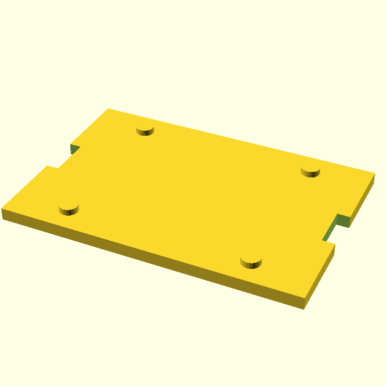
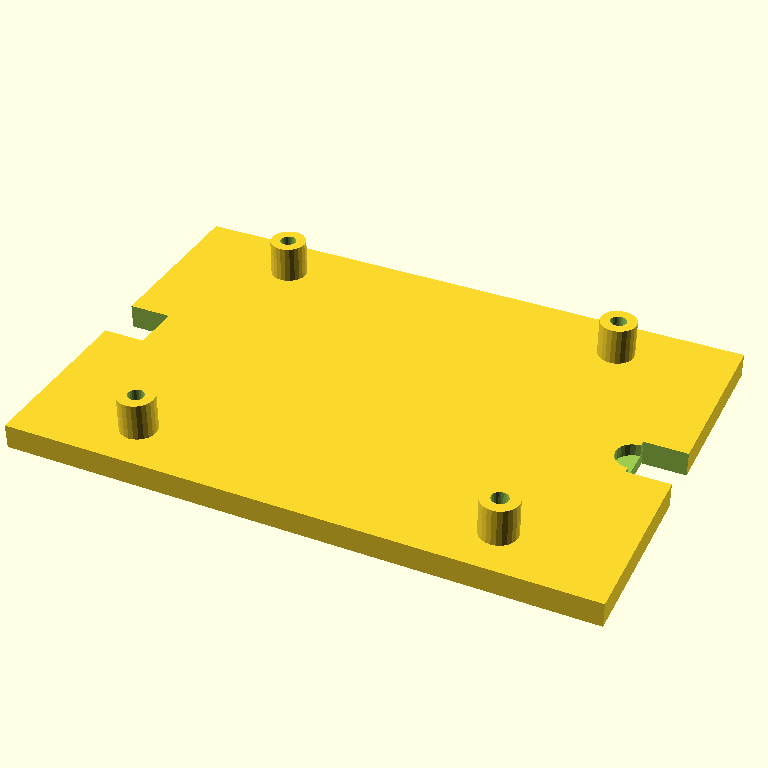

01:05 — three iterations, score went 4 → 5 → 4
The Pi 5 wall mount is the dimensional-fidelity demo: 85 × 56 mm board outline, 58 × 49 mm mounting-hole pattern, M2.5 clearance. I gave the agent those numbers explicitly and added the OpenSCAD-cheap-primitives guardrails that worked on the SCADvil. Three iterations ran. None converged.
Prompt:
Create an OpenSCAD wall-mount base plate for a Raspberry Pi 5. The point is dimensional fidelity to the Raspberry Pi 5 board.
Required Pi 5 dimensions (use these exactly):
- Board outline: 85 mm × 56 mm
- Mounting hole pattern: rectangular, 58 mm × 49 mm centers
- Mounting holes: 2.7 mm clearance (M2.5)
Build:
- A 95 × 65 × 4 mm rectangular base plate
- Four 6 mm standoffs at the mounting-hole positions
- M2.5 clearance holes (2.7 mm) drilled through each standoff and the base, using a top-level difference()
- Two wall-mount keyhole slots near the short edges, 8 mm wide × 14 mm long
Design constraints:
- Only cube(), cylinder(), translate(), rotate(), and difference()/union() — no minkowski(), no hull()
- $fn = 24 globally
- All holes must be subtractive at the top level (never positive cylinders)
- Sharp corners are fine
Prioritize dimensional accuracy. FDM-printable at 0.2 mm layers, base down, no supports.The trajectory:
| iter | render | score | done | summary |
|---|---|---|---|---|
| 0 |  |
4 | False | Standoffs missing — difference() carved them away because the holes were drilled before standoffs were unioned in. Slots present but wrong geometry. |
| 1 | 5 | False | Standoffs visible and holes drill cleanly through them. Keyhole slots are simple rectangular notches at the plate edges, not real keyhole shapes. Standoff/plate z-overlap (only 2 mm of standoff protrudes above the plate). This is the iteration we shipped. | |
| 2 |  |
4 | False | Standoffs grew taller and look right, but the keyhole slots regressed into broken partial cuts at the corners. Score dropped, controller stopped on regression. |
Stop reason: score did not improve. Three rolls of the dice; each one fixed one bug and broke another. Source: models/pi5-wall-mount.scad — the iter-1 SCAD, verbatim.
What got better since the SCADvil
Three things to call out:
- The critic caught real bugs this time. On iter-0 it said: "Standoffs are added as positive geometry after the difference() operation, meaning the clearance holes drilled in the base plate do not align with or pass through the standoffs themselves." That's an OpenSCAD-aware critique — the same kind Gemma 4 31B gave us in yesterday's polling experiment, but from Claude this time. Sharper prompt → sharper critic.
- No peg-not-hole bug. All four mounting holes are drilled with top-level
difference(). The "must be subtractive at the top level (never positive cylinders)" line in the prompt did its job. - The agent recovered from each iteration's bugs. iter-0's "holes don't pass through standoffs" was exactly fixed by iter-1, which then introduced a different bug (standoff/plate z-overlap), which iter-2 fixed but in fixing it broke the keyhole slots.
What's still wrong (in shipped iter-1)
- Standoff/plate z-overlap. Plate sits at z=0 to z=4. Standoffs sit at z=0 to z=6. They overlap by 4 mm — only 2 mm of each standoff actually protrudes above the plate. A Pi screwed in here would have its underside touching plate material.
- Keyhole slots are rectangular notches. No circular "hanging" hole + slot tail. Functions as an edge slot, not a keyhole. You could hang it on a screw if the screw hangs partway out.
- No board-outline reference. The mount has no visible registration for where the 85 × 56 board sits — relies entirely on the standoff positions.
A scadia bug, fixed in this same commit
The first attempt at this run crashed at iter-1 — the agent's refine pass returned valid SCAD wrapped in a markdown ``` fence and the renderer fed the backticks straight to OpenSCAD, which choked on Parser error: syntax error. Real scadia bug, not a model bug.
Fix: a 7-line _strip_fence helper in src/scadia/client.py that drops the surrounding fence if present. After patching, the 3-iteration run completed cleanly. The bug was in scadia all along; it just hadn't bitten until iter-1 of a model that liked to fence its output.
What this changes about the loop (or doesn't)
What's next
- Print the iter-1 mount and see if a Pi 5 actually fits. The 4 mm standoff overlap might or might not be a deal-breaker depending on Pi underside topology.
- Move on to Stage 3 — the retro Pi 5 case. Same constraints, plus aesthetic prompt.
- Consider whether to wire one of the multi-critic experiment findings into
agent.pybefore Stage 3 runs (ensemble gate, AST sensor, or leave it).